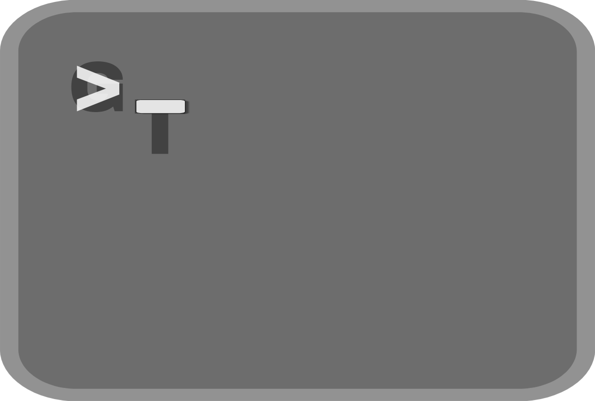

Bem vindo ao site do GlyshTerm!

GlyshTerm é um emulador de terminal open-source feito em Python, altamente personalizável para Windows e Linux com o intuito de ser minimalista e rápido como esse texto.
Ele promete resover todos os problemas de um emulador de terminal que no caso são:
Velocidade e Desempenho
Suporte a Recursos Modernos
Confiabilidade e Estabilidade
Portablidade e Compatibilidade
Integração e Extensibilidade
Ainda não está pronto, mas será aberta na versão 1.0(alpha), e o site não está totalmente pronto
Veja Guia de Instalação para usar no seu pc
💡Dica
No Linux, o arquivo de configuração fica em ~/.config/glyshterm/config.py já no Windows fica em C:\Users\SeuUsuário\AppData\Roaming\glyshterm\config.py
No Linux, o arquivo de configuração fica em ~/.config/glyshterm/config.py já no Windows fica em C:\Users\SeuUsuário\AppData\Roaming\glyshterm\config.py
Sobre mim
Eu descobri o mundo da tecnologia quando tinha 10 anos, quando estava no curso de tecnologia da minha escola, teve um certo dia em que a gente começou a ver coisas sobre programação, e assim me interessei. Comecei a ver mais sobre, estudei mais sobre, até chegar em um certo ponto a ser o aluno que mais sabe de programação na sala. Resolvi criar uma conta no GitHub após ter a idade o suficiente, hospedei meus códigos(que no caso são poucos), aprendi git, procurei cursos grátis na udemy e no youtube, aprendi a linguagem do Arduino e agora, com 13 anos, eu estou aprendendo Python. Aprendi tudo isso sozinho, sem pagar nada, e isso mostra que estudar não custa, você pode aprender agora programação, o ruim é que para arrumar trabalho isso não vai servir se não tiver um certificado, mas o que mais importa é o conhecimento. Não quero dar muitos detalhes da minha vida. Mas eu criei esse emulador de terminal para práticar e apreder mais sobre. E espero que você consiga transformar os seus sonhos em realidade, obter o sucesso. Boa sorte...Qualquer erro mande um email para mim, meu Gmail